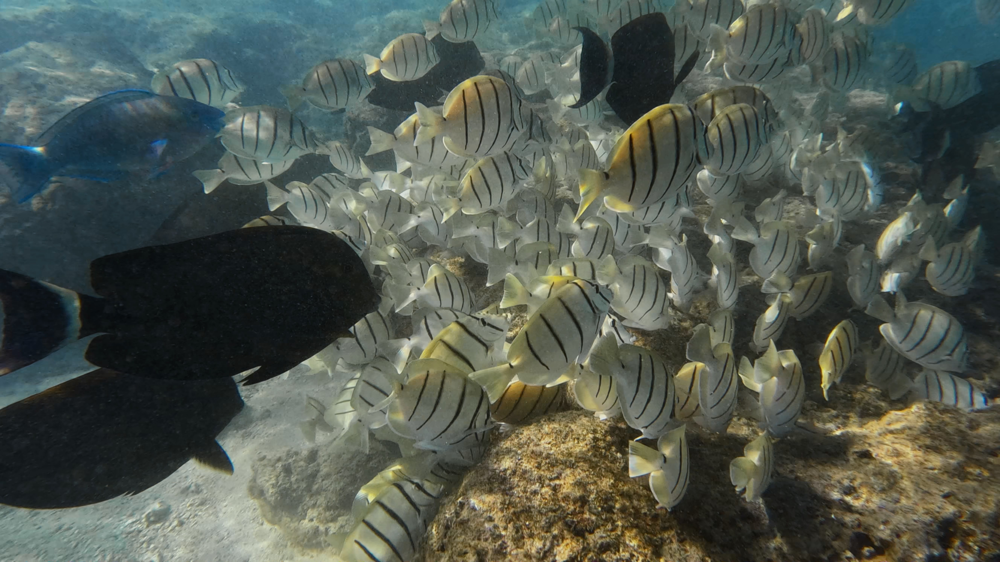
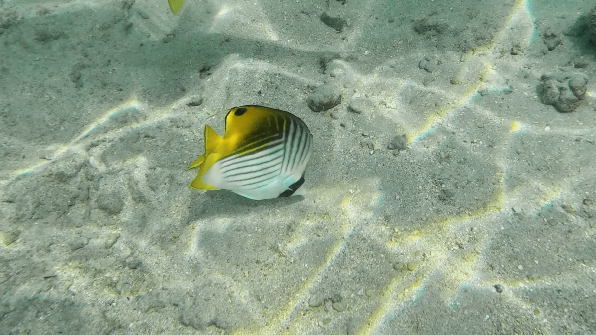

About My Passion for Swimming
Hello! My name is Jason, and I have a deep passion for swimming. Swimming has been a major part of my life for many years. Whether it's a relaxing swim in a pool or an exhilarating competition in open water, I love everything about it. Swimming allows me to stay fit, improve my endurance, and find peace of mind.
I've been swimming since I was a child, and over the years, it has become more than just a hobby—it's a way of life. From mastering different strokes to understanding the importance of technique and training, swimming is an activity that brings me joy and a sense of achievement. On this website, I’ll share more about why swimming is my passion, how it has shaped me, and tips for anyone looking to dive into this wonderful sport!
Didn't have much swimming photos, but do include some fun snorkeling photos!
Here are some photos of me snorkeling in the beautiful waters of Hawaii:
 